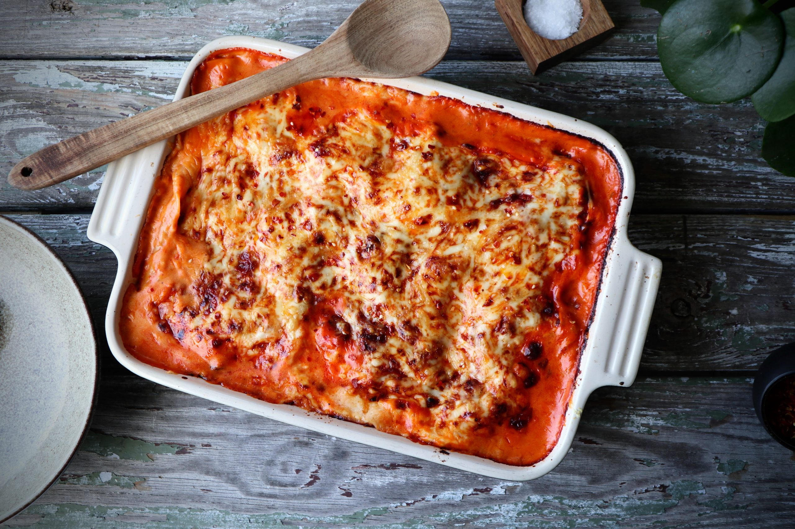

De beste oppskriftene du finner for sommeren 2022
Frokostpannekaker med syrnet melk

INGREDIENSER
FREMGANGSMÅTE
1 Porsjon, 1 porsjon gir 8 stk
1 1/2 dl Sammalt hvete, fin
1 1/2 dl siktet hvetemel
1/2 ts salt
5 dl syrnet melk naturell
3 stk egg
smør til steking
1. Bland mel og salt i en bakebolle.
2. Tilsett halvparten av den syrnede melken og rør godt til en tykk og klumpfri røre.
3. Tilsett resten av den syrnede melken og visp inn eggene.
4. La røren svelle i ca 30 minutter.
5. Stek pannekakene i litt smør på middels varme.
6. Bruk gjerne pannekakene som wraps. Fyll dem med skinke, ost og litt grønnsaker, eller kremost, laks og agurk.
Frokostpannekaker med syrnet melk
INGREDIENSER
FREMGANGSMÅTE
6 Porsjoner
400 gram kjøttdeig
3 stk hvitløksfedd
1 stk rød chili
200 gram tomatpuré
400 gram hakkede tomater
2 stk løk
1 stk gulrøtter
3 dl kjøttkraft/kjøttbuljong/fond
2 ts sukker
salt og pepper
1. Finhakk løk, hvitløk og chili
Finkutt eller rasp gulrøtter
Rasp ost til sausen og til gratineringen
2. Steik kjøttdeig i en varm steikepanne. Når kjøttdeigen nærmer seg ferdig stekt, tilsett finhakket hvitløk, chili, løk og gulrot. Stek dette med kjøttdeigen i ca. 1 minutt. Strø over litt salt og pepper.
3. Ha deretter oppi tomatpure (for at det skal bli lettere å røre ut tomatpuréen kan du tilsette en dl. vann). La tomatpuréen «steke» i ca. 1 minutt med kjøttblandingen for å få vekk den bitre smaken. Tilsett deretter sukker, hakkede tomater og kjøttkraft (du kan bruke buljongterning/pulver som du blander ut i vann). Rør alt godt sammen og la småkoke i ca.10 minutter, smak til med salt og pepper. Eventuelt litt sukker, chilipulver og andre krydder som du liker.
4. Smelt meierismør i en kjele på svak varme og rør inn hvetemel med en visp. Ha deretter oppi litt og litt melk mens du visper godt for å unngå klumper. La sausen småkoke i 10 minutter, mens du stadig rører godt i bunnen så den ikke svir seg. Skru av varmen og tilsett raspet ost. Smak til med salt og pepper til du synes den smaker godt!
5. Legg lag på lag med kjøttsaus, lasagneplater og ostesaus. Jeg begynner med litt kjøttsaus så den dekker bunnen på den ildfaste formen jeg bruker, deretter har jeg et lag med lasagneplater. Knekk de til slik at de dekker hele formen, men pass på at de ikke ligger dobbelt. Ha deretter litt ostesaus oppå lasagneplatene, og deretter kjøttsaus oppå der igjen. Fortsett slik til du har lagt tre lag med lasagneplater. Avslutt med kjøttsaus eller ostesaus slik at lasagneplatene blir dekket.
6. Strø over ost og stek i forvarmet ovn på 190 grader i ca. 30 minutter. Lasagnen er ferdig når osten er gylden og du kan kjenne at en kniv glir lett igjennom lasagneplatene.
Server med salat og hvitløksbrød eller focaccia ❤️